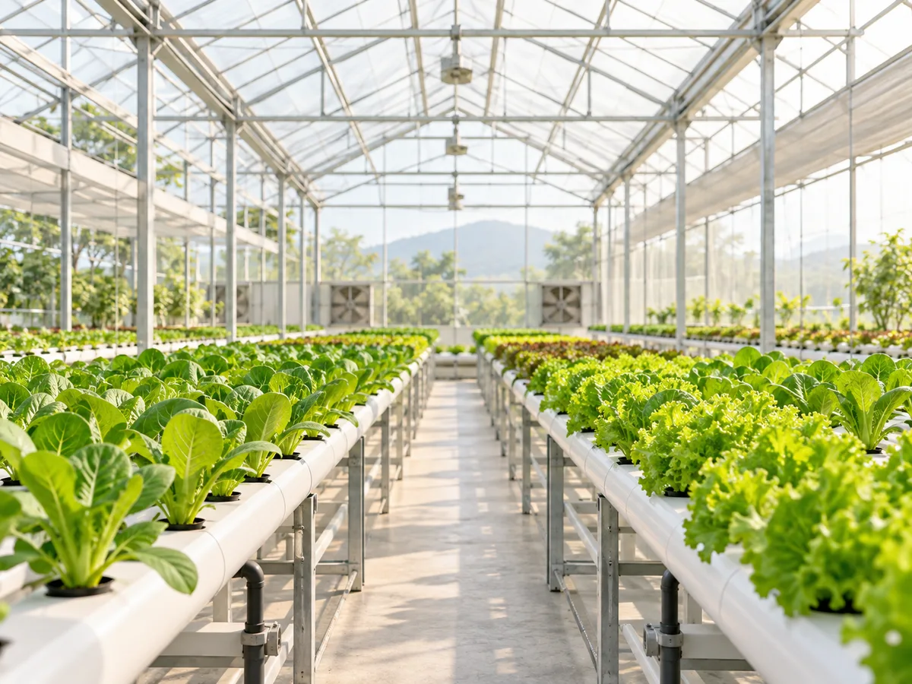
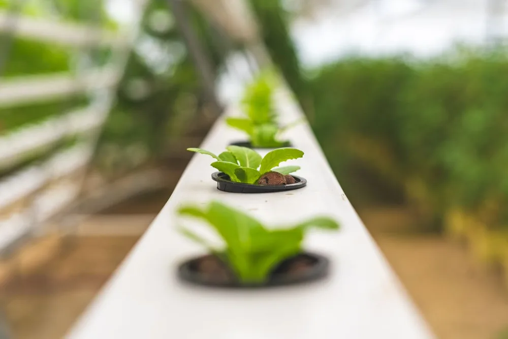
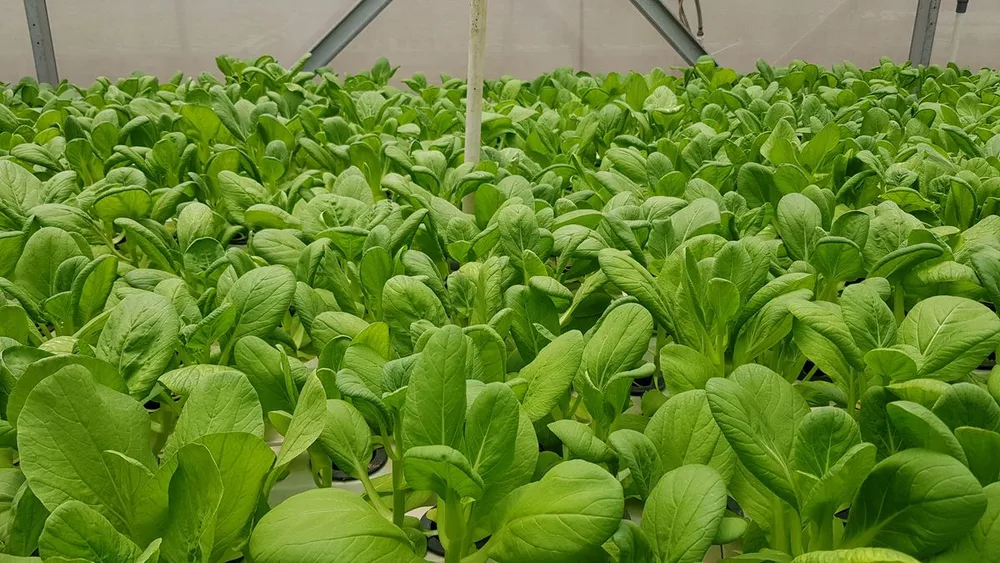
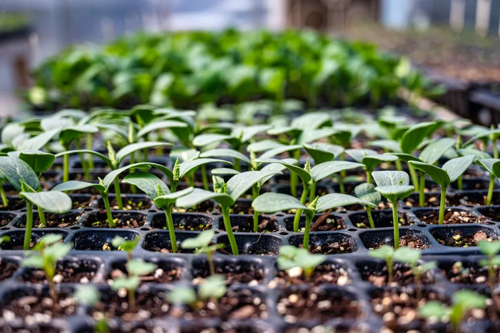
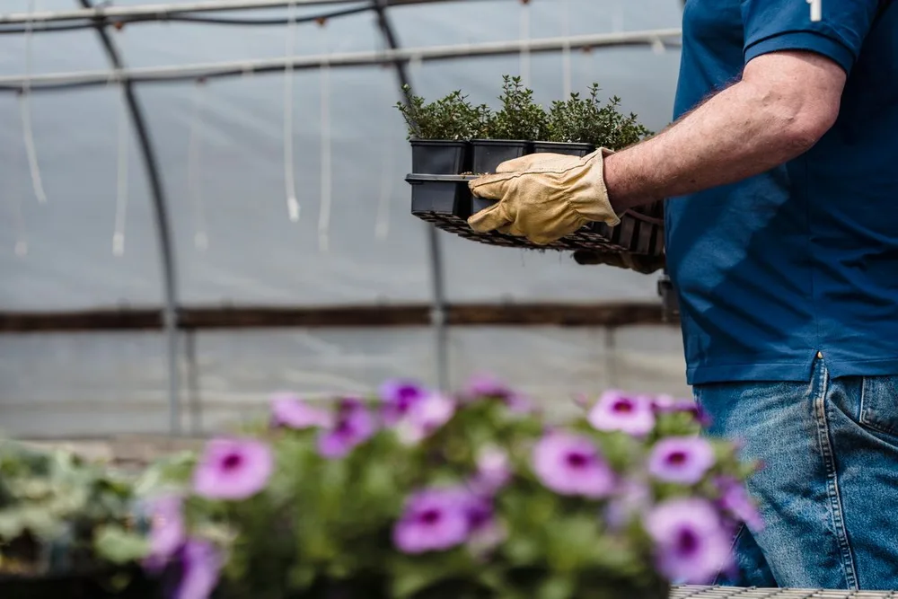
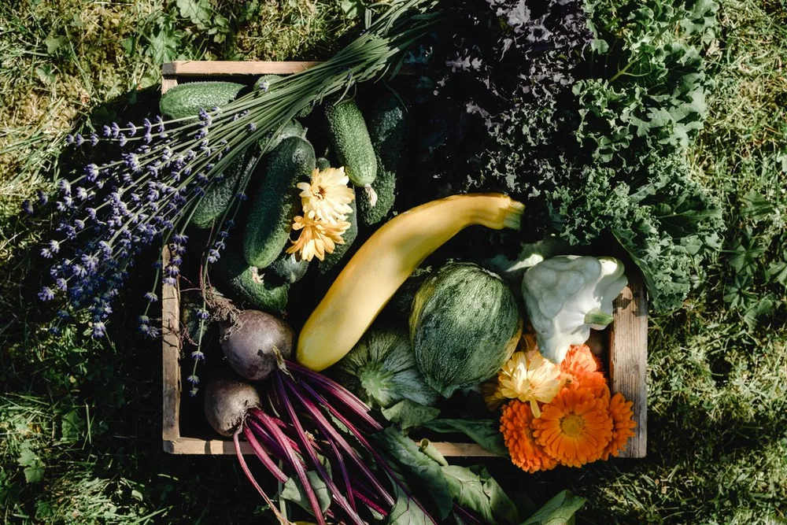
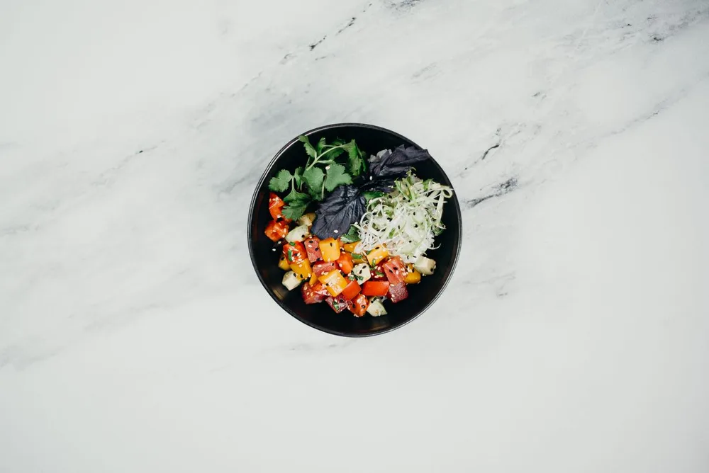

Gia đình
Bạn muốn thêm rau vào bữa ăn hằng ngày? Tìm hiểu các loại rau dễ kết hợp, chọn lượng phù hợp với số người và kế hoạch nấu ăn.
RAU TƯƠI ỨNG DỤNG SMART FARM
Microgreens, rau ăn lá & rau gia vị
Chọn rau hợp bữa ăn.
Hiểu hơn cách rau được trồng.
Ươm Xanh cung cấp rau tươi được chăm sóc trong môi trường kiểm soát. Khám phá hương vị, cách dùng và hành trình trồng để chọn loại rau phù hợp với gia đình hoặc thực đơn của bạn.

Nhiệt độ
Theo dõi
Độ ẩm
Cân bằng
Dinh dưỡng
Tối ưu
Ươm Xanh là thương hiệu rau tươi ứng dụng mô hình Smart Farm, cung cấp microgreens, rau ăn lá và rau gia vị được chăm sóc trong môi trường kiểm soát.

Theo dõi nhiệt độ, độ ẩm và ánh sáng giúp người chăm sóc điều chỉnh theo nhu cầu của cây. Bạn có thể tìm hiểu cách vận hành tại trang Smart Farm.
Các bước từ chọn hạt, chăm sóc đến đóng gói được trình bày dễ hiểu. Bạn biết những công việc phía sau một phần rau trước khi tìm hiểu sản phẩm.
Ươm Xanh hướng đến sắp xếp thu hoạch gần thời điểm giao, hạn chế thời gian chờ. Lịch cung ứng cụ thể được trao đổi theo loại rau và nhu cầu của bạn.
Microgreens tạo điểm nhấn, rau ăn lá làm nền cho món và rau gia vị thêm hương. Chọn theo khẩu vị, món muốn nấu và số người ăn.
Từ bữa cơm gia đình đến thực đơn kinh doanh, bắt đầu với loại rau và lượng dùng phù hợp.
Bạn muốn thêm rau vào bữa ăn hằng ngày? Tìm hiểu các loại rau dễ kết hợp, chọn lượng phù hợp với số người và kế hoạch nấu ăn.
Muốn thử microgreens hoặc đổi hương vị cho món quen? Khám phá mô tả vị, kết cấu và gợi ý sử dụng trước khi chọn loại rau đầu tiên.
Trao đổi về nhóm rau, lượng dùng và lịch cần hàng để xem khả năng đáp ứng cho thực đơn. Nhu cầu cụ thể được thống nhất trực tiếp.
Bạn quan tâm mô hình trồng hoặc muốn trao đổi ý tưởng hợp tác? Tìm hiểu quy trình và kết nối với Ươm Xanh để cùng làm rõ nhu cầu.
Hệ thống cảm biến theo dõi nhiệt độ, độ ẩm, ánh sáng, nguồn nước và dinh dưỡng.
Hạt giống → Nảy mầm → Phát triển lá → Cảm biến theo dõi → Sẵn sàng thu hoạch. Một vòng 9 giây kể cách cây lớn lên cùng nước tưới và ánh sáng.
Theo dõi nhiệt độ
Cân bằng độ ẩm
Chu kỳ chiếu sáng
Nguồn nước tuần hoàn
Theo giai đoạn cây
Microgreens, rau ăn lá và rau gia vị — nuôi dưỡng trong môi trường kiểm soát.
 Microgreens
MicrogreensNhiều sắc lá nhỏ trong cùng một phần rau, vị tươi và kết cấu nhẹ. Phù hợp khi bạn muốn khám phá hương vị đa dạng của microgreens.
Hương vị & kết cấu: Tươi mát, hơi cay nhẹ, giòn
 Microgreens
MicrogreensThân tím đỏ, lá xanh nhỏ và vị cay nhẹ tạo điểm nhấn dễ nhận ra. Một lựa chọn dành cho người thích món ăn có thêm cá tính.
Hương vị & kết cấu: Cay nhẹ, giòn, tươi
 Rau ăn lá
Rau ăn láCác lớp lá mềm ôm thành búp, vị thanh và giòn mát. Dáng lá thuận tiện cho món cuốn, bánh mì và đĩa rau ăn kèm.
Hương vị & kết cấu: Ngọt nhẹ, mát
Từ hạt giống nhỏ bé đến bàn ăn của bạn — mỗi bước đều được chăm sóc.
Khởi đầu từ hạt giống chất lượng cao.
Mầm cây vươn lên trong môi trường kiểm soát.
Ánh sáng, nước và dinh dưỡng được tối ưu.
Thu hoạch đúng thời điểm tươi nhất.
Đóng gói cẩn thận, giữ độ tươi.
Từ nông trại đến bữa ăn của bạn.
Thiết kế quy trình sử dụng nước hiệu quả trong toàn bộ vòng trồng.
Thu hoạch đúng lúc, hạn chế thất thoát sản phẩm trong quy trình sản xuất.
Hướng đến sắp xếp giao nhận hợp lý, hạn chế thời gian chờ sau thu hoạch.
Theo dõi môi trường trồng và điều chỉnh khi điều kiện thay đổi.
Hành trình từ hạt giống đến bàn ăn qua hình ảnh, âm thanh và công nghệ.
Không thể tải video. Vui lòng thử lại hoặc tải tệp bằng liên kết phía trên.
Ươm Xanh – Nông nghiệp thông minh. Khởi đầu từ hạt giống được chọn lọc. Ánh sáng, nước và dinh dưỡng đồng hành cùng mầm xanh. Theo dõi môi trường, chăm sóc từng giai đoạn. Thu hoạch đúng lúc, giữ trọn sự tươi lành. Đóng gói cẩn thận, nối gần nông trại và bàn ăn. Cùng vun đắp một lối sống xanh, bền vững.
Từ những khay cây non đến bữa ăn nhiều sắc xanh, mỗi góc nhìn mở ra một phần của hành trình.





